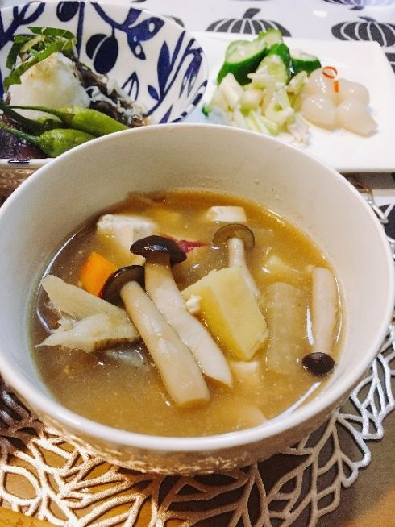

| 3工程で美味しい！ 腸が喜ぶ腸活レシピ: 家族の健康は腸で決まる！ 3工程で美味しいシリーズ | |
| 橋本ゆう子 | |
| 橋本ゆう子 (2019) | |
はじめに
毎日の食事のメニューを考え、毎日食事を作る・・・
お仕事をしている方、子育て真っ最中の方、介護しながらの家事・・・
主婦のみなさまは大変ですよね。
私もその一人です。
そんなみなさまに、簡単でカラダに優しいレシピをご紹介したく、このレシピ本を作りました。
私のレシピはどこのスーパーにもある食材で、3 工程でパパッと作れる家庭料理です。
調味料の分量や食材など、各ご家庭に合わせてどんどんアレンジしてくださいね。
美と健康は『腸内フローラを整えること』からはじまります。
毎日、同じ手間をかけるなら、ほんの少し、カラダのこと、食のことを知っていた方が断然いいと私は思っています。
腸活に絶対おススメ！！
毎日食べたい酵素たっぷり『大根おろし』
＊大根おろし＋油揚げ＋豆苗( 油揚げはトースターでこんがり焼く)
＊大根おろし＋しらす＋花かつお
＊大根おろし＋サバ缶＋しょうが千切り
＊大根おろし＋大豆水煮＋青ジソ
＊大根おろし＋なめこ＋青ジソ
＊大根おろし＋ツナ缶＋カイワレ......などなどアレンジたくさん。
特に揚げ物の日にはたっぷりと大根おろしを摂りましょう！
カブとキーウイのサラダ
材料2人分
・キーウイ2個
・カブ2個
・ミックスビーンズ適量
・フライドオニオン（市販のものでok ）
1. カブとキーウイは食べやすい大きさに切る。
2. ミックスビーンズとフライドオニオンをのせる。
3. ドレッシング...バルサミコ酢大2、オリーブオイル大1 、レモン汁小1 、の割合。塩、黒こしょうで味を調整。
カンタンロールキャベツ風
材料2～3 人分
・油揚げ3 枚...熱湯をかけ油抜きし、半分に切り、開きやすいように麺棒状のものでコロコロする
・豚挽肉150g
・玉ねぎ1/2 個...みじん切り
・しょうが1 片...みじん切り
・卵1 個...溶いておく
・キャベツ1/4 個...ざく切り
・トマト水煮缶1/2 ～1 缶＊お好みで
・お麩適量、ブイヨン1 個
・ローリエ1 枚
1. 肉だね...豚挽肉、玉ねぎ、しょうが、卵、水大2、塩、黒こしょう
お麩（乾燥したものを手で細かく砕いて加える）←肉だねの固さをみながら量を調整。
よく混ぜ、油揚げに詰め、ようじでとめる。
2. スープ...トマト水煮缶、水400ml 、ブイヨン1 個、ローリエ。
＊酸味が強いようなら、お好みでケチャップを加えてください。
＊トマト水煮缶の量により、水の量を調整してください。
3. キャベツを加え[1]と一緒に15 ～20 分程煮る。
さつまいも汁

材料2人分
・にんじん1/2 本...食べやすい大きさに切る
・ごぼう1/2 本...ささがき
・こんにゃく小1 袋...食べやすい大きさに手でちぎる
・さつまいも中1/2 本...半分は角切り、半分はすりおろす
・しめじ1/2 株...ほぐす
・大根適量...食べやすい大きさに切る
・豆腐1/2 丁
・しょうが1 片...すりおろす
1. にんじん、大根、ごぼう、こんにゃく、しめじ、さつまいも角切りは、ごま油で炒める。だし汁600ml 、豆腐も加え煮る。
2. 材料が柔らかくなったら、酒大1 、塩小1/2 、しょうゆ大2 を加え、さつまいものすりおろしを入れとろみをつける。
3. 最後におろししょうがを入れる。
豆腐のステーキきのこソース

材料2人分
・木綿豆腐...2等分にし、よく水分を切り片栗粉をまぶす
・しいたけ2枚...うす切り
・えのき1/2 株...たて半分に切り、ほぐす
・しめじ1/2 株...ほぐす
・小ねぎ適量...小口切り
・しょうが1 片...すりおろす
・大根適量...すりおろす
1. ごま油で、豆腐を両面焼き、皿に取り出しておく。
2. しいたけ、えのき、しめじ、を炒め、酒大2、しょうゆ大2、みりん大1 を加える。
3. 皿に盛り、おろししょうが、大根おろしをのせる。
＊お好みで、大葉や花かつおをのせても！
ししゃもの南蛮漬け
材料2人分
・ししゃも6 尾...片栗粉をまぶす
・かぶ大1 個...いちょう切り 葉はみじん切りにし、さっと、ゆで、よく水分しぼる
・玉ねぎ1 個...薄切りにして空気にさらしておく
・ミニトマト5 個...半分に切る
＊その他、にんじん、パプリカなどお好みの野菜を加えてアレンジしてください。
1. ししゃもはごま油で両面焼く。
2. 漬けタレ...しょうゆ大3 、きび糖大2、みりん大2、酢大2
＊お好みでタカの爪（タネをとったもの）
＊お好みで、グレープフルーツ1/4 個の果汁をしぼって加えると爽やかです。
3. 野菜と[1] のししゃもをタレに漬け込む。
小松菜と牡蠣のオイスターソース炒め
材料2人分
・牡蠣150g ...塩小1 をふり、水で洗い流し、よく水分をふき、塩、こしょう、片栗粉をまぶす。
・小松菜1 束...ざく切り
・しいたけ6 個...軸の先の固い部分だけをとり、半分に切る
・長ネギ1/2 本...ななめ切り
1. ごま油で牡蠣を炒め、一旦取り出す。
2. 同じフライパンで野菜を炒める。
3. [1]の牡蠣をフライパンに戻し、オイスターソース大1 、しょうゆ大1 、酒大1 をからめる。
大根と豚肉の竜田揚げ
材料2人分
・大根...1.5㎝の半月切り（適量）
・豚ロース200g ...適当な大きさに切る
1. 漬けダレ...しょうゆ、みりん各大1 と1/2 に大根と豚肉を10 分程漬ける。
2. [1]の大根と豚肉の汁気をかるく切り、片栗粉をまぶす。
＊お好みでタレに、しょうが、にんにくのすりおろしを加えてもok 。
3. 中温の油で大根と豚肉をこんがりと揚げる。
豚肉のキーウイソースがけ
材料2人分
・豚ロースとんかつ用2枚
・キーウイ2個
・付け合わせ野菜
1. 豚肉の両面に塩小1/2 をふり、焼く。
2. ソース...オリーブオイル大4 、バルサミコ酢大2、塩、黒こしょう、キーウイの粗みじん切りを加えさっと混ぜる。
3. 皿に盛り付けソースをかける。
セロリのきんぴら
材料
・セロリ1 本
1. セロリの筋を取り、茎を3 ～4mm のうす切り、葉はざく切りにし、ごま油で炒める。
2. しんなりしたら、きび糖大1 、みりん大1/2 、しょうゆ大1 で味付け。
豆苗とツナ缶のおひたし
材料2人分
・豆苗1 袋
・ツナ缶適量
1. 豆苗はざく切りにし、さっと茹でる。
2. [1]にツナ缶を混ぜ、花かつおをのせる。
3. お好みでしょうゆ、またはポン酢で。
毎日1杯のみそ汁は腸活の基本！3具材以上の具だくさんみそ汁がおススメ！！
ピリ辛みそ汁
材料
・木綿豆腐・えのき・しめじ・小松菜などお好きな具材
1. 木綿豆腐は手で大きめにちぎり、その他の野菜は適当な大きさに切る。
2. 出汁はガラスープの素（なるべく化学調味料無添加のもの）を使い、お好みの具材でみそ汁を作る。
3. 仕上げに豆板醤を小1 （お好みで調整してください）入れる。
ほうれん草のドライカレー
材料2人分
・合い挽き肉200g
・ほうれん草1 束...ざく切り
・卵2個...温玉または目玉焼き
・玉ねぎ1/2 個...みじん切り
＊合い挽き肉のかわりに大豆ミートを使うと、よりヘルシーです。
1. 玉ねぎを透き通るまで炒め、塩、こしょうをし、合い挽き肉を入れ炒め、最後にほうれん草を入れさっと炒める。
2. カレー粉大1 、水 1/2 カップ、トマトケチャップ大 2、ウスターソース大 1 を加え、塩、こしょうで味を調整する。
3. 温玉または目玉焼きをのせて出来上がり。
切り干し大根サラダ
材料2人分
・切り干し大根25g ...水洗いする
・にんじん1/4 本...太めの千切りにし、塩少量をふり、よく水分しぼる
・ツナ缶適量...水気をよくしぼる
・白いりごま適量
・お好みで茹でたまご1 個・カイワレなど
1. 切り干し大根はさっと茹で（1 ～2分）、よく水分しぼる。
2. [1]とその他の材料を混ぜ、マヨネーズ大 1 、酢大 1 、きび糖大 1/2 であえ塩、黒こしょうで味を調整する。
めかじきのソテー玉ねぎソース
材料2人分
・めかじき2切れ
・玉ねぎ1 個...すりおろす
・お好みの付け合わせ野菜
1. めかじきに塩をふり、水分が出たらふき取る。
2. 玉ねぎのすりおろし1 個分、しょうゆ大2、みりん大2のタレ( 分量は調整してください) にめかじきを10 分程漬けておく。
3. [2]を両面焼き、最後にタレを全部加え、ひと煮立ち。
焼き野菜の温サラダ
材料2人分
・しいたけ4 枚
・オクラ6 個
・じゃがいも1 個...下ゆでする
・パプリカ1 個
・ブロッコリー1/2 株...ゆでる
・鶏もも肉適量
＊お好みの野菜でアレンジしてください
1. 鶏もも肉の皮目をパリッとさせるように焼く。
2. ブロッコリー以外の野菜を焼く。
3. ドレッシング...みそ小1 、マヨネーズ大1 ～2、レモン汁少々
豆苗のワンタンスープ
材料2人分
・豆苗1 袋...細かく切り、塩小1/2 をふってもみ、水分しぼる
・しいたけ2枚...食べやすい大きさに切る
・鶏挽肉50g
・ワンタンの皮12 枚
・しょうが1 片...うす切り
1. 鶏挽肉と豆苗、塩、こしょう、片栗粉大1/2 、ごま油小2/3 をよく混ぜ、ワンタンの皮で包む。
2. ごま油でしょうが、しいたけを炒め、湯450ml 、塩小1/3 、しょうゆ小2、こしょう適量加える。
3. [2]のスープにワンタンを入れ煮る。最後に酢小1 を入れる。
＊こしょうを効かせると美味しいです。
キャベツのそぼろ丼
材料2人分
・キャベツ1/6 個...ざく切り
・しめじ1/2 株...ほぐす
・合い挽き肉100g （大豆ミートでもok ）
1. 合い挽き肉、キャベツ、しめじを炒める。
2. しょうゆ大3 、きび糖大1 、酒大2、みりん大2を加える。
3. 温玉をのせる。
あさりの卵とじ
材料2人分
・あさり400g ...よく砂出しする
・油揚げ1 枚...短冊切り
・えのき1/2 株...縦半分に切り、ほぐす
・水菜1 株...ざく切り
・卵3 個...溶いておく
1. 出汁200ml に酒大 3 を加え、あさりを入れふたをし、あさりが開いたら、出汁をこし、あさりの身を取り出しておく。
＊出汁は取っておく。
2. あさりの出汁で、油揚げ、えのきを煮て、しょうゆ大1 、みりん大2、を加え、最後にあさりと水菜を入れさっと煮る。
3. 溶き卵をまわし入れる。
ひじきとさば缶の炊き込みご飯
材料2人分
・米2合...研いでおく
・さば缶1 缶
・油揚げ1 枚...キッチンペーパーで油をふき、縦半分にきり、細切り
・にんじん1/4 本...太めの千切り
・乾燥ひじき15g ...水で15 分くらい戻し、水洗いして、水分しぼる。
・小ねぎ適量
1. 炊飯器に米、ひじき、油揚げ、にんじん、さば缶( 汁ごと) 入れる。
2. [1]に顆粒だし小 1 ～ 2、みりん大 3 、酒大 2と 1/2 、しょうゆ大 2と 1/2 を加え普通の 2合の水加減で炊く。
3. 炊きあがったら、小ねぎをちらして出来上がり。
にんじんチャンプルー
材料2～3 人分
・木綿豆腐1 丁...水切りをして、手で大きめにちぎる
・にんじん1 本...適当な長さに切り、スライサーでスライスする
・卵2個...溶いておく
・花かつお適量
1. ごま油でにんじんを炒め、しんなりしたら、木綿豆腐を入れ炒める。
2. 酒大1 、しょうゆ大1 と1/2 、顆粒だし小1 、オイスターソース大1 、塩、こしょうで味付けし、溶き卵を回し入れる。
3. 皿に盛り、花かつおをのせて出来上がり。
終わりに
腸内フローラを整えることは自己免疫力を上げること、そして、それは命を守ること。
決して大げさではなく、私は強く強く実感しています。
そう思う出来事が、家族の中でもたくさんあったからです。
私自身も10 年前に大病をし、腸内フローラを意識した食生活を続けた結果、
奇跡が起きました。
手術もせず、自然と病変が消えたのです。
病気は、ある日突然あらわれます。
しかし、実はカラダの中では少しずつ、少しずつ不調が積み重なっているのです。
どんな病気も、カラダの不調も、結局は 「自己免疫力」勝負なのです。
そして、それは毎日の食生活でコツコツと作り上げていくしかないのですね。
この私の経験を一人でも多くの方にお伝えしたく、当サロンでは「腸内フローラ改善教室」を開催し、多くのみなさまにご好評いただいております。
ご興味ある方はぜひご参加くださいね。
最後に、ご家族みなさまの笑顔がずっとずっとこの先も続くために、
この「腸活レシピ」をご活用いただけたら幸いです。
著者プロフィール
橋本ゆう子
・1962 年生まれ。神奈川県出身。2男1 女の母。
・デトックス専門サロン minto 主宰。
（ハーブ蒸し×リンパケア×腸内フローラ改善教室）
≪資格≫
・フェイシャルエステ・リンパドレナージ・英国式リフレクソロジー
・酵素デトックスインストラクター
メディア紹介